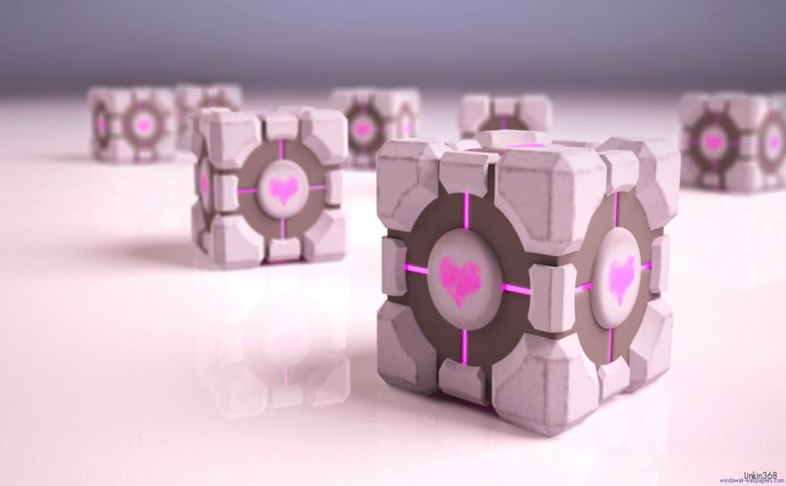
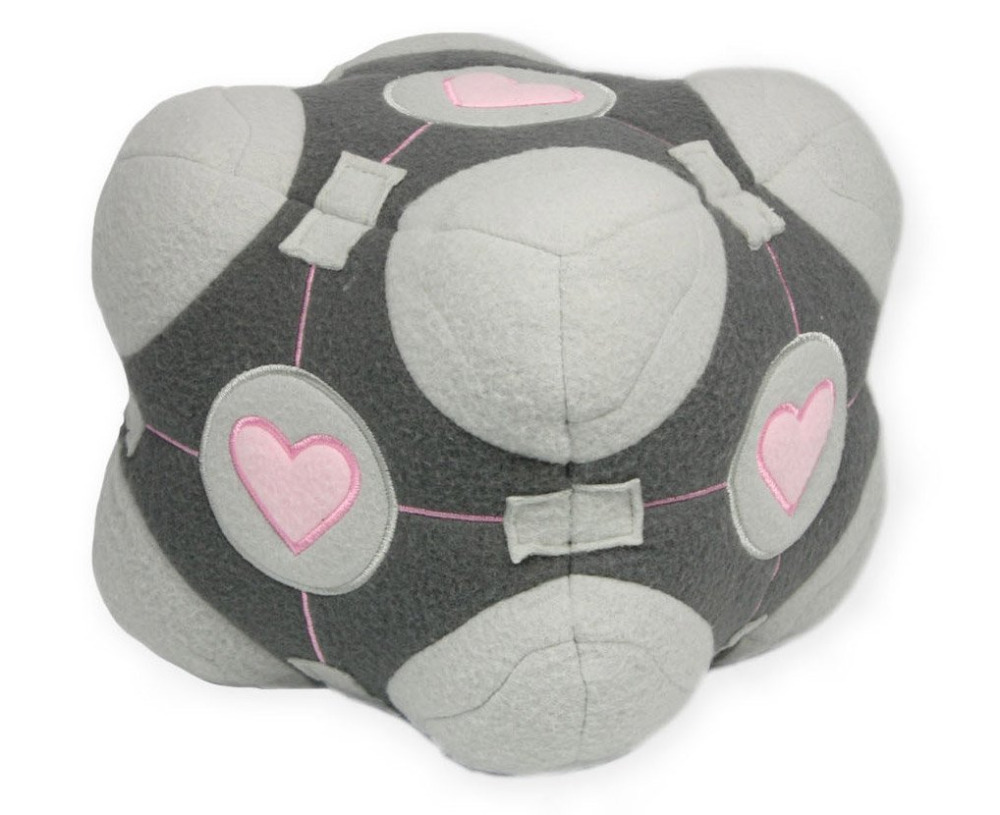
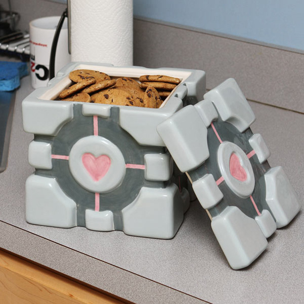

Portal был признан одной из лучших игр сборника The Orange Box и часто получал более высокие оценки рецензентов, чем Half-Life 2: Episode Two или Team Fortress 2. Журналистами была отмечена уникальная игровая механика, а также чёрный юмор. Некоторые критики неодобрительно отнеслись к чрезмерно пустым помещениям игры и её небольшой продолжительности. Несмотря на это, игра получила множество наград по итогам 2007 года. Немало игровых журналистов выдали Portal награду «Лучшая игра 2007 года». На конференции Game Developers Conference в рамках программы награждения выдающихся игр Portal получил высшую премию года — 2007 Game of the Year («Игра года 2007»). Все критики безоговорочно признали Portal сверхоригинальным продуктом игровой промышленности. Дальше всех пошёл развлекательный американский канал G4tv, который обобщил все мнения, назвав труд дизайнеров Valve как Most Original Game («Самая оригинальная игра»). Значительной долей оригинальности Portal одарили сценаристы, создав увлекательный сюжет и необычных персонажей. ГЛэДОС получила от канала G4tv награду Best New Character («Лучший оригинальный персонаж»), а Куб-компаньон получил от «Страны Игр» приз «Лучший персонаж второго плана», которая была в шаге от того, чтобы наградить ГЛэДОС. Весь сюжет целиком получил признание от Penny Arcade (Best Writing — «Лучший сюжет»). Музыка, написанная для игры, также получила несколько наград и была оценена игроками. Penny Arcade признали музыку как Best Soundtrack («Лучший саундтрек»). Из стана критиков выступил информационный портал об индустрии развлечений IGN, найдя песню «Still Alive» Джонатана Колтона «Лучшей песней для финальных титров».
Любители игры оценили чёрный юмор, окружающий Куба-компаньона, и сами привязались к этому неживому герою. По Всемирной паутине стали распространяться различные фан-арты, обои для рабочего стола и более креативные варианты реализации своей привязанности к герою игры. Кроме этого, в Интернете появился шаблон-развёртка, который можно распечатать, и склеить свою собственную небольшую копию Куба-компаньона. Моддер Магнус Перссон пошёл ещё дальше и сделал из акрила функционирующий корпус системного блока в виде Куба-компаньона. Авторы вебкомикса Penny Arcade не преминули возможностью посмеяться над популярным созданием и упомянули Куб в одном из своих художественных творений. Команда Valve Corporation определённо ожидала такой реакции публики, поэтому в их магазине сувенирных товаров почти сразу после выхода игры появилась мягкая игрушка Weighted Companion Cube, которая была распродана в канун Рождества и Нового года.
 